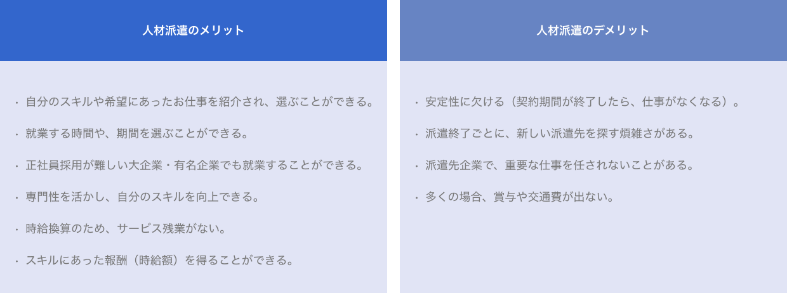
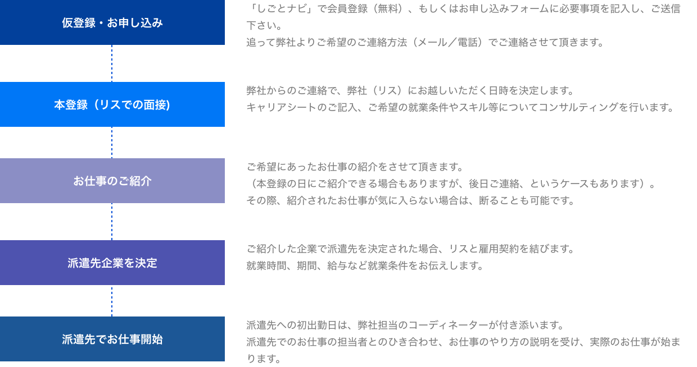

「人材派遣」とは、人材派遣会社に登録をし、人材派遣会社から紹介される、自分のスキルや希望にあうお仕事の中から、派遣先企業を決めて就業するというシステムです。
派遣社員は、実際に働く企業（派遣先企業）に雇用されるわけではなく、人材派遣会社と雇用関係が結ばれます。
そのため、給与の支払いや社会保険などは人材派遣会社が取り扱いますが、お仕事の内容の指揮命令関係は、実際に働く企業（派遣先）にありますので、仕事の内容については派遣先企業の指示を受けて就業することになります。
【人材派遣の仕組み】
人材派遣は、派遣社員と人材派遣会社（派遣元）・派遣先企業（一般企業）の３者が関係し、下の図のような関係で成り立っています。
自分のスキルを武器に大企業に勤務したり、正社員・契約社員のように労働時間が拘束されないことで、自分にあったライフスタイルや時間の有効活用ができたり...
自分の希望や職種でお仕事が選べるのはもちろん、企業側でも短期間の戦力補充のためだけでなく、求める専門性を持つ即戦力として、派遣社員の長期活用が非常に活発になってきています。

「しごとナビ」の運営会社リスでは、インターネットサイトでの転職支援サービスだけでなく、人材派遣サービス（通常派遣・紹介予定派遣）を
全国の支社・オフィスで展開しております。
派遣を希望される方は、ぜひ弊社の専門のコーディネーターにご相談下さい。
【リスへの人材派遣のお申込み～お仕事開始まで】

派遣社員として働きたい方、派遣先を探している方は、ぜひ「人材派遣のお申し込み」ボタンからお申し込み下さい。
リスには安心の３つポイントがございます。
POINT 1 .求人情報量が豊富！
転職サイト「しごとナビ」を運営している会社なので求人情報量が多く、常に最新のお仕事情報を提供することが可能となっております。
また、しごとナビのサポートツール『履歴書・職務経歴書の自動作成』『志望動機・自己ＰＲの作成支援ツール』などをご利用頂くことも可能です
POINT 2 .スキルアップを応援します！
リス株式会社は派遣社員の皆様のスキルアップを「資格取得支援制度」という形で応援します。
「資格取得支援制度」とは、該当の資格を取得された派遣社員の方に難易度に応じた報奨金を支給させて頂く制度です。
※２年以内にリスで通算６ヶ月以上就業された方が対象です。
(現在対象の資格について今年度中を目処に見直し中です。詳細につきましては担当営業にお問合せ下さい。)
POINT 3 .個人情報の管理が万全！
個人情報保護を重要視しているリス株式会社では、「プライバシーマーク」を取得しています。働く方が不安にならないよう常に最大限の配慮を心がけております。
◆リス株式会社の個人情報保護方針・取り扱いについて
◆プライバシーマーク使用許諾事業者一覧(外部サイト)
◆就業規則情報についてこちら
リス株式会社には、派遣社員の皆様に安心して働いていただけるよう、しっかりとした就業規則がございます。リス株式会社の派遣就業規則です。ご一読頂き、ご理解・ご納得の上お手続きの程お願い申し上げます。派遣社員として働きたい方、派遣先を探している方は、ぜひ「人材派遣のお申し込み」ボタンからお申し込み下さい。